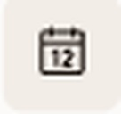
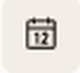
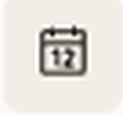
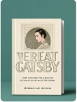
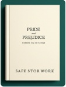

Descubre el placer de leer juntos
Nuestro club de lectura te invita a explorar nuevos mundos, compartir ideas y conectar con otros amantes de los libros. Cada mes seleccionamos una obra para leer, analizar y comentar en comunidad.
Nuestro club de lectura te invita a explorar nuevos mundos, compartir ideas y conectar con otros amantes de los libros. Cada mes seleccionamos una obra para leer, analizar y comentar en comunidad.
Una joven descubre un jardín abandonado lleno de secretos y magia, transformando su vida y la de quienes la rodean.

15 de julio, 19:00

22 de julio, 18:00

29 de julio, 20:00

